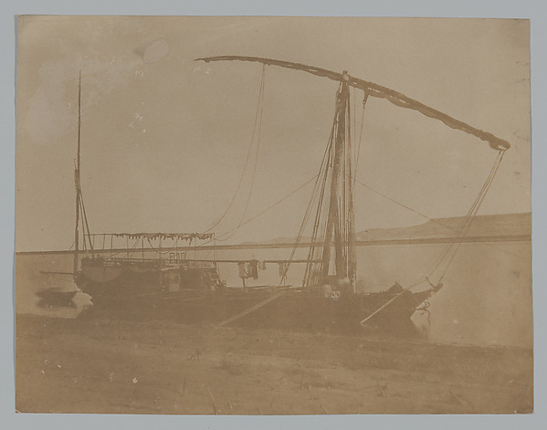

Uma paisagem de contrastes
Água, terra fértil e deserto
A maior parte do Egito recebe pouca chuva. Por isso, durante milênios, muitas cidades e áreas cultivadas se concentraram perto do Nilo. Quando as águas inundavam o vale, deixavam umidade e sedimentos que ajudavam a preparar os campos.
A agricultura dependia do rio e do trabalho coletivo: canais e bacias ajudavam a conduzir e reter água. Grãos, legumes, tâmaras e linho faziam parte da economia e da alimentação em diferentes épocas.
Olhe no mapa: o Nilo corre do sul para o norte. Ao chegar ao Mediterrâneo, abre-se em vários braços e forma o delta.

Encontre o Nilo
Mapa esquemático: mostra a direção geral do rio, o delta e algumas cidades; não está em escala.
O delta fica ao norte; Assuã fica ao sul. A costa do Mar Vermelho está a leste.